디젤 스펙이 중요한 보스인데 내 디젤이 돌파도 낮고 약해서
최저클은 걍 가볍게 포기하고 적당히 내가 가능한 최저선에서 깨왔음
나처럼 디젤보다 미하라가 좀 더 센 니붕이들, 그리고 지즈를 좀 더 편하고 쉽게 깨고싶은 니붕이들을 위한
아니스 크라운 라피 미하라 목단, 아니스를 재진입으로 사용하는 조합을 이 조합 뒤에 간단히 추가로 설명해보려고 함
이거도 영상을 첨부하긴 하지만 얘는 투력이 비슷하게 높아도 딜이 많이 부족해서 아마 1600k+의 전투력이 요구될 것으로 생각됨
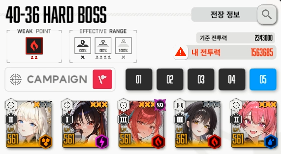
클리어 스펙
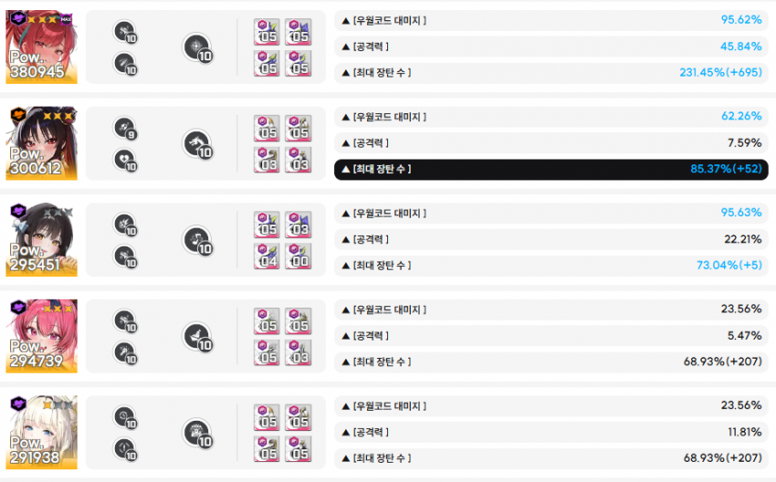
큐브는 디젤에게만 받뎀감 큐브(렐릭 템퍼링), 나머지는 재장전 큐브(렐릭 베어)
돌파가 낮아서 지즈 입국심사 못버티는 니케는 받뎀감 큐브를 껴주어야 함, 대신 받뎀감 큐브는 레벨이 낮을 것이기 때문에
필연적으로 스쿼드 전체의 전투력이 낮아지게 됨, 이것은 본인이 큐브를 바꿔가면서 이래도 딜은 안 모자른지 직접 해보아야 함
버충은 일단 기본적으로 디젤 톡톡이로 함
목단이 강제되는 보스이기 때문에 버충이 많이 답답하게 되는 보스전이 지즈전임
미하라넣고 4머신건으로 굴리면 버충이 너무 많이 밀리고, 디젤을 사용하면 1페 한번 2페 한번 재생되는 눈깔 파츠를 이용해서
버충을 용이하게 할 수 있기 때문에 지즈전에서는 미하라보다 디젤이 많이 좋은 편임
0. 게임 시작
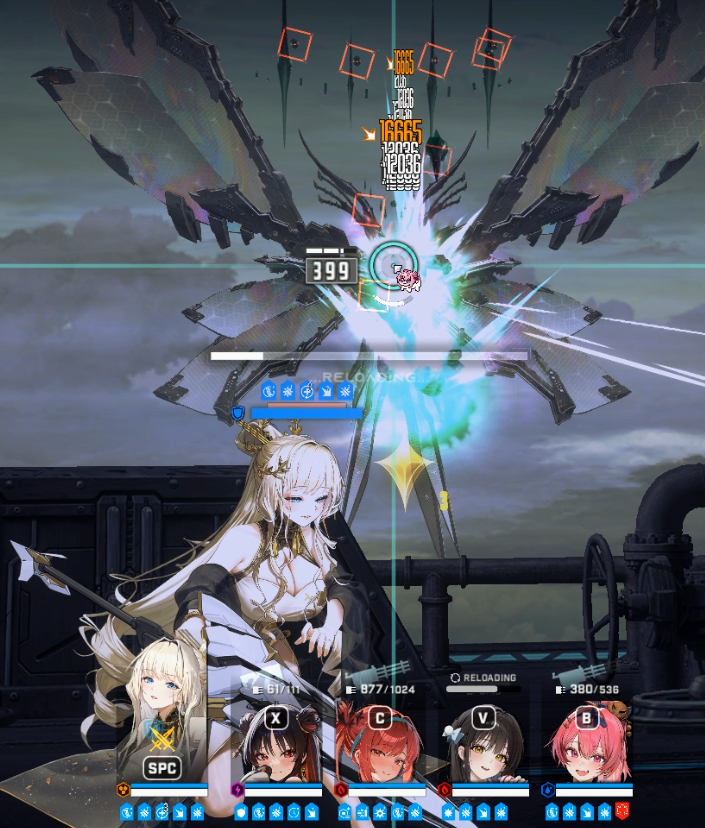
겜 시작후 바로 날아오는 투사체는 다섯 니케중에 랜덤으로 골라먹기임
입국 심사 후에 목단을 제외한 니케는 뼈내장 다보이는 빈사상태의 체력이 되기 때문에
목단을 빼고 그 누구도 이 공격을 맞고 시작해선 안됨
디젤은 초반 버충때 바로 탄창을 털어버려서 재장전을 시키고, 목단은 맞아도 되니 신경을 끈다고 치면
크라운 마스트한테 날아오는 거만 방향 보고 엄폐로 피해주면 됨
라피한테 날아오면 엄폐하느니 조금이라도 딜 더 우겨넣어야 해서 맘편히 리트하는게 좋음
이 뒤에 버스트를 켜고 나면 목단 도발 덕분에 모든 공격에 목단에게 꽂혀서 신경쓸 필요가 없음
1. 목 - 메 - 라
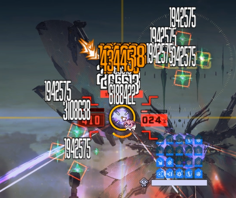
이때는 팁같은 건데
상 좌 우에 각각 4개씩 소환되는 날개 가루의 경우 라피 유탄으로 위쪽 날개쪽을 맞춰주면 쉽게 제거가 가능하다
버스트가 끝나면 눈 파츠 4개가 바로 생성된다
다다음 버스트 사이클은 정확한 타이밍을 맞춰서 사용해줘야 하기 때문에
다음 버스트는 굳이 디젤로 버충해줄 필요 없다
2. 목 - 크 - 디
버스트를 켜고 나면 레이저를 계속 크라운 아니면 목단에게 발사하는데
나처럼 디젤로 버충을 땡기지 않고 그냥 버스트 충전되는걸 기다렸다가 사용하면
버스트가 끝날 쯤에 목단에게 레이저가 꽂힐거임
이거만 엄폐로 피해주는거만 신경쓰면 됨
보호막에 막힐 때도 있는데 보호막 날아가고 맨몸에 꽂힐 때도 있어서 툭하면 죽기 쉽다
후에 디젤 잡고 눈 파츠 이용해서 버충 빠르게 해주면 된다
디젤로 버충하기 위해 버스트 중간에 미리 재장전 해두는거도 좋다
3. 목 - 메 - 라
여기가 이제 지즈 입국심사 직전의 마지막 버스트인데
지즈의 휘황찬란 광선 패턴 이후에는 매우 높은 방증 버프가 걸려 버스트가 켜져 있어도 딜을 넣을 수가 없다
하지만 목단의 받뎀감 버프는 받은 상태로 이 광선을 맞아야 살 수 있기 때문에,
버스트가 끝나기 직전에 광선을 맞고 버스트가 끝나는 상황이 딜을 제일 효율적으로 우겨넣을 수 있어 매우 이상적이다
버스트는 정확히 28초에서 27초로 넘어갈 쯤에 사용하면 된다
너무 빠르면 목단 받뎀감 버프가 끝나서 전멸해버리니 그냥 적당히 27초 되면 버스트 누르기 시작하면 된다
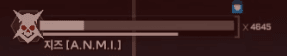
이 때 확인 가능한 딜컷은 대략 4600줄대라고 생각하면 된다
여기 기점으로 4700줄부터는 딜 부족이므로 크리리트 하거나 그냥 맘편히 자고오는 것이 좋다
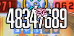
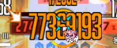
라피 버스트의 즉발뎀 크리 유무가 생각보다 크기 때문에 라피 크리리트가 생각보다 중요한 편이긴 하다(특히 메스트 3스택 버스트일때)..
4. 목 - 크 - 디
다음 버스트는 휘황찬란 광선 직후 어짜피 딜이 안박히는 구간이기 때문에
버스트를 바로 켜는 것이 의미가 없다
디젤로 버충하지 말고 버스트 차오르는거 그냥 기다리면 2:12 ~ 2:11 에 버스트를 켤 수 있다
2:12에 켜도 되는데 후에 사슬컨이 될 때도 있고 안될 때도 있어서 그냥 11초에 켜도 무방하다
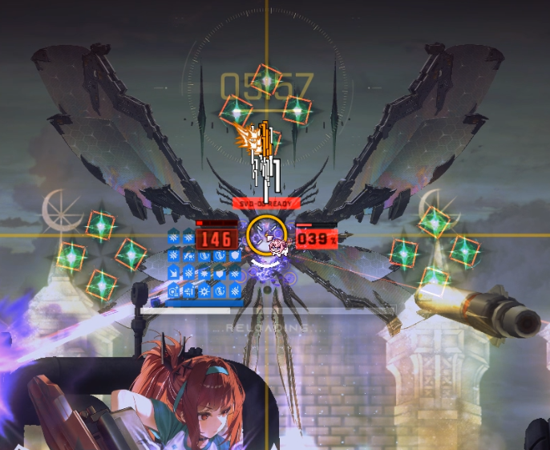
아까 봤던 날개 가루 패턴이 나오는데
디젤 버스트 타이밍이라 요격하기도 곤란하므로 이때 그냥 라피 재장전 한 번 해주고
도발 걸려서 공격 오는 니케 엄폐로 피해주도록 한다
나는 이때 크라운 무적도발이 켜지는 타이밍이라 거의 무조건 크라운에게 꽂혀서 크라운 잡고 엄폐로 피해주었다
크라운 아니면 목단이니 본인이 해보고 누구한테 오는지 확인하고 피하면 된다
그리고 중요한 사슬컨이다
원래라면 날개 가루 패턴 직후에 저지원 2개와 함께 바로 니케 4명을 속박해서
안 묶인 니케로 저지를 해서 나머지 니케들의 기절을 해제하는 패턴인데..
니케들 기절먹는 것보다 저지원 등장이 약간 더 빨라서, 저지원이 등장하자마자 바로 저지해서
기절을 먹지 않고 패턴을 넘기는 '사슬컨' 이라는 것이 있다
날개 가루 꽂힘과 동시에 지즈가 다가옴 -> 저지원 등장이라서
타이밍을 기억해 뒀다가 바로 라피로 슥 저지해주면 된다
굳이 ESC 안해도 되고 저지원 나올 곳에 공격하고 있다가 빠르게 옆으로 그어주면 저지가 쉽게 되니 익히면 된다
이 뒤부터는 디젤로 버충을 빠르게 땡겨주는 것이 중요하다
5. 목 - 크 - 라
디젤로 바로 버충을 해주고 버스트를 바로 켜준다
아까 저지를 하고 나면 지즈가 잠깐 그로기에 걸리는데 복귀하기 전에 버스트를 켜는 것이 베스트이다
후에는 라피로 똑같이 날개 가루를 요격해주면 되는데
디젤 탄관리도 이때 미리 해놓으면 좋고 바로 버충을 해야해서 디젤 잡고 있는 것이 여러모로 편하다
미처 요격못한 날개 가루는 디젤 톡톡이로 해결할 수 있다
6. 목 - 메 - 디
매우 중요
메스트 버스트 타이밍이라 보호막이 날아가는데
이때 지즈가 존나 잘 안보이는 투사체를 1,3,5번 자리에 발사해 공격한다
라피같은 애들 잡고있으면 진짜 아무것도 안 보이기 때문에, 버스트를 켜면 바로 크라운으로 전환한 다음에
날아오는 투사체를 보고 전체 엄폐로 피해주도록 한다
그리고 디젤 버스트가 끝나갈 쯤 코드 배리어가 나타나는데 미리 디젤 재장전을 해놓고
저지원 3개 중 2개를 빠르게 지워준다
남은 저지원 한개는 이때 부수지 않는다
7. 목 - 크 - 라
매우 매우 중요
여기가 좀 어렵다
디젤로 버충을 빠르게 해야 하는데 속저를 최대한 째서 패턴을 최대한 뒤로 미루는 것이 중요하기 때문이다
버스트가 끝나면 디젤로 저지원에 톡톡이로 버충을 하면서 적당히 저지원 체력을 깎다가
디젤 톡톡이로 마저 저지원을 부수던가, 디젤 톡톡이 후 라피로 빠르게 전환해서 저지원을 부수던가 해서 속저가 끝남과 동시에 버스트를 켜는 것이 중요하다
핵심은 디젤 톡톡이로 탄을 다 털어서 버충을 한다 + 속성 저지를 최대한 째서 속성 저지 완료와 동시에 버스트를 켠다임
이러면 버스트가 끝나기 직전에 2페이즈로 전환하게 된다
2페로 전환되기 전에 미리 디젤 재장전을 해놓고 대기하면 된다
8. 목 - 크 - 디
전환 후 바로 버스트가 꺼지면 디젤로 빠르게 톡톡이를 한다
아마 버스트를 켜진 못할텐데 상관없다
특수 저지 패턴 입장해서 저지원에 톡톡이를 해서 버충을 하면 된다
저지 패턴 진입 전에 버스트 게이지를 충분히 채워놓지 못하면 디젤 톡톡이로 여기서 버충을 하다가 저지원을 많이 깨부수게 되는데
우리는 특수 저지 패턴때 디젤 버스트를 켠 다음 최대한 저지를 째서 디젤 지속딜을 이 타이밍에 넣는 것이 중요하다
이제 여기서 버스트 켜고
최대한 라피 유탄과 디젤 런처가 저지원을 안 깨부수도록
아주아주 매우 조심하면서 저지원을 부숴줘야 한다
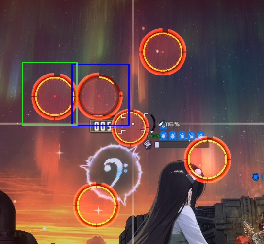
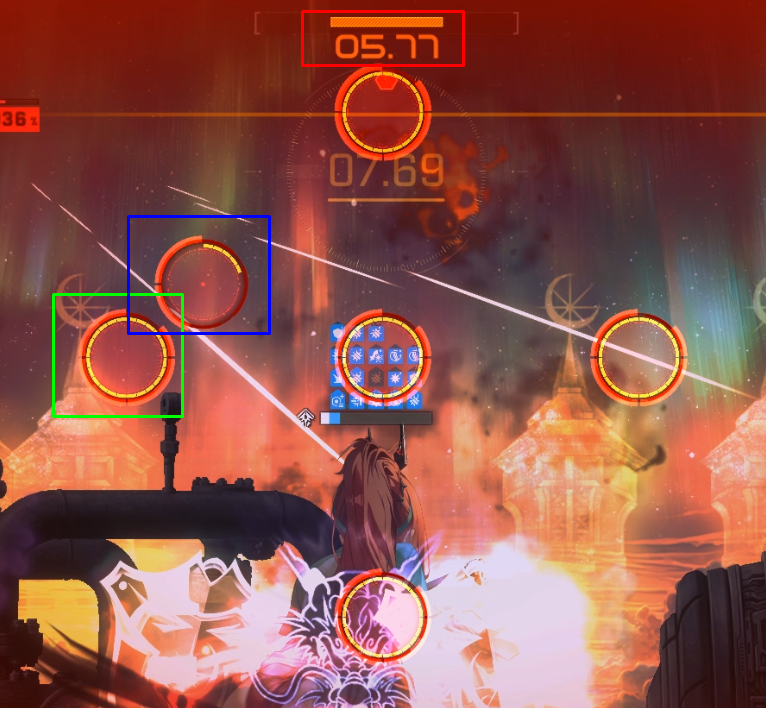
이 특수 저지 패턴에 특징이 있는데
나타나는 저지원 자체의 저지 시간은 동일한데 저지원이 나타나는 타이밍은 달라서
정확히는 안쪽 저지원을 몇개 부수면 바깥쪽에 새로운 저지원이 나타나는 방식이라
각 저지원 마다 남은 저지 시간을 파악 하는 것이 매우 중요하고
그것과 별개로 맨 위쪽 상단에 전체 저지 시간이 있는데 이것도 신경을 써야 한다
너무 저지원을 째다가 저 시간 쿨이 다 되어서 실패하는 경우도 있으니 유의해야 함
솔직히 다 필요없고 라피 유탄과 디젤 런처만 주의해서 한꺼번에 저지원을 다 터트리는 것만 주의하면 된다
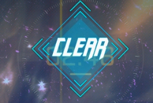
하여튼 이렇게 버스트가 끝날 쯤에 나오면 된다
9. 목 - 메 - 라
나오자마자 디젤로 바로 버충을 해주고
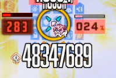
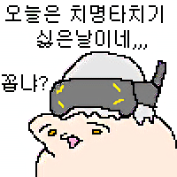
나는 이때 크리티컬이 터진게 하면서 손에 꼽을 정도로 너무 안터졌다
무슨 억까를 해도 이런식으로 하나 싶었음
하여튼 메스트 라피 버스트 켜주고 빡딜 넣으면 된다
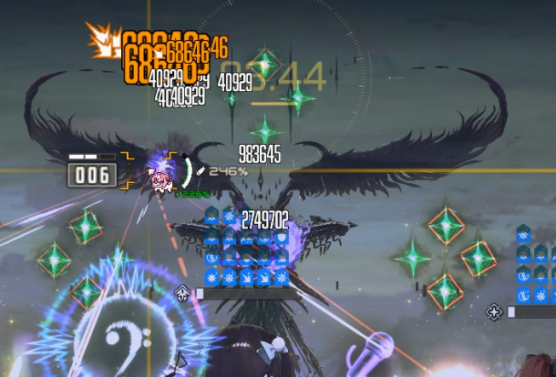
아까 1페에서도 봤던 날개 가루 패턴이 똑같이 나오니 날개 부분에 유탄 터트려서 요격해주면 된다
10. 목 - 크 - 디
역시나 디젤로 버충을 해주고
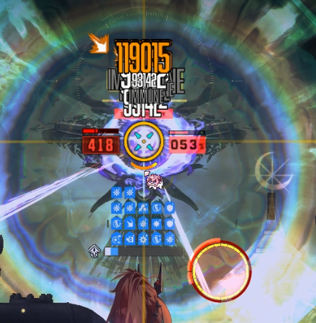
여기서 나오는 속성 저지도 마찬가지로 최대한 째주다가 저지한다
11. 목 - 크 - 라
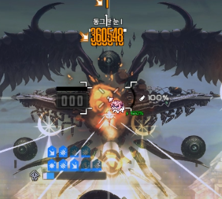
버충 타이밍에 눈깔이 재생이 될텐데
조준보정 잡히는 곳에 디젤 톡톡이 해도 눈까지 딜 판정이 나니 그냥 저기 톡톡이 하면 된다
바로 버스트 켜주고
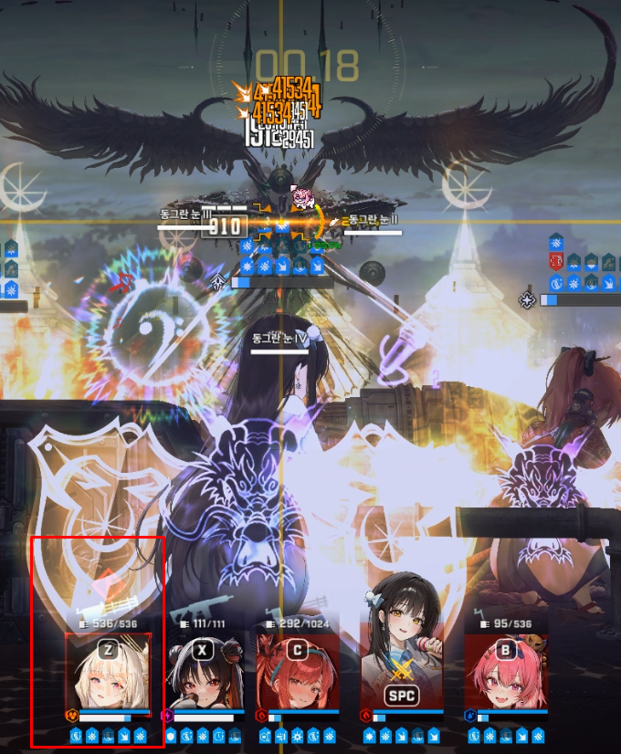
나는 이 버스트가 끝날 쯤에 크라운 무적도발이 켜져서 그냥 진행해도 무방했는데
혹시 아니라면 이때도 버스트가 끝나자마자 레이저가 꽂히기 때문에
타겟팅 당한 니케 엄폐 해주거나 아니면 이때 딱히 컨트롤 요소는 없기 때문에 크라운 무적도발을 이때 직접 조작해서 켜주는 것도 방법이다
12. 목 - 메 - 디 (막버)
존나 기도한다.
이제 아크라미목 조합이다
이 조합은 난 지즈를 좀 더 높은 투력 대신 더 쉽고 편하게 깨는 것을 원하는 사람들 위한 덱임
아니스를 재진입으로 사용해서 얻는 점은
1. 아니스 버스트의 최대 체력 증가 버프 > 지즈 휘황찬란 광선을 명함 딜러들이 맞고 버티기 더 수월함
2. 뛰어난 버스트 충전 능력 > 미하라를 사용 가능
3. 투사체 요격 능력
4. 큰 의미는 없지만 힐이 있음
대신 메스트와 같은 버퍼가 빠지므로 딜 체급은 좀 낮아진다
1600k+의 전투력에서 시도하는 것을 추천
플레이 방법 자체는 위와 크게 다르진 않은데
신경써야 할 추가 디테일만 좀 설명하도록 하겠삼
일단 아까와 다르게 버충이 매우 쾌적해서 바로바로 버스트를 켤 수 있기 때문에
버스트가 끝난 후 목단에게 오는 레이저 공격을 한번 엄폐로 피해줘야 하는 점과
2분 27초에 버스트를 켜야하는 것은 동일하나 버스트를 바로바로 썼기 때문에 이때 약간 대기를 했다가 버스트를 사용해야 한다
아니스 버스트에 최대 체력 증가 버프가 있기 때문에 버스트를 너무 빨리 사용하면 안 된다
앵간하면 27초까지 봤다가 버스트를 누르는 걸 추천
아까 2분 11초에 사용해야 했던 버스트도 마찬가지로 버스트가 돌아도 기다렸다가 써야 한다
속성 저지도 최대한 쨌다가 저지와 동시에 버스트를 켜는 것도 똑같다
아니스 버스트는 재진입 쿨타임 때문에 미리 써도 상관 없다
그 외엔 위의 설명한 택틱과 크게 다르지 않다
이상 지즈 공략이었삼
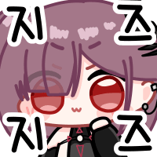